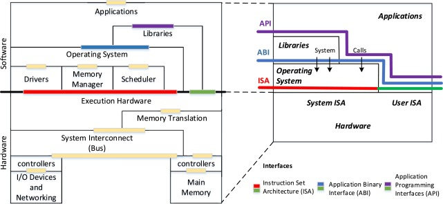
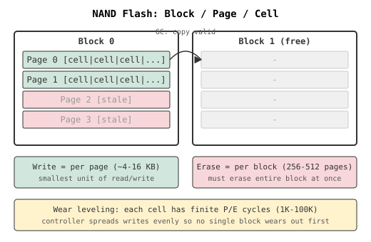

(C:)
(C:) cs300
cs300 A Survey on the Bichon Frisé
A Survey on the Bichon Frisé
Operating System
A digital computer without an operating system (OS) is just bare metal. The OS is often overlooked, but this is a crucial invention that supports nearly all modern computing. We encounter it naturally when moving from high-level code to low-level hardware instructions.
- https://www.youtube.com/watch?v=ISJ44S5sZu8
- https://www.youtube.com/watch?v=HbgzrKJvDRw
- https://www.youtube.com/watch?v=D26sUZ6DHNQ (UDS: unix domain sockets)
- https://www.youtube.com/watch?v=XNGfl3sfErc
- https://www.youtube.com/watch?v=H01FkDtllwc
I
1.1. Overview
The earliest generation of electronic computers (1940s–50s), such as the ENIAC, were programmed manually in pure machine code by rewiring circuits or feeding in punched cards. Programs ran in isolation, required laborious setup, and left machines idle between jobs. The concept of an OS emerged in the 1950s with batch processing systems which grouped similar jobs for sequential execution without manual intervention. A key example is GM-NAA I/O, developed for the IBM 701. The 701 was programmed in assembly, used control cards to interpret jobs and automate execution, and was later adapted to support high-level languages such as Fortran (1957).
The 1960s marked a shift toward time-sharing systems (TSS) and multiprogramming, that permitted a concurrent execution of multiple programs residing in memory by rapidly switching the CPU among them. The evolution led to the development of Multics, a pioneering TSS, jointly built by AT&T Bell Labs, GE, and MIT to support a robust, multi-user computing environment. However, discontent with its complexity prompted researchers at Bell Labs to develop Unix in the early 1970s. This newer and simpler OS incorporated a modular kernel, hardware abstraction, and multi-user support, in which these principles remain central to modern operating system design.
The 1980s ushered in the era of personal computing, shifting OS development from command-line interfaces (CLI) to graphical user interfaces (GUI) to improve accessibility for non-technical users. Microsoft introduced MS-DOS in 1981, a single-tasking CLI-based OS, followed by successive versions of Windows that adopted cooperative and later preemptive multitasking. Around the same time, Apple’s Macintosh OS (aka. macOS) brought the GUI into mainstream. In the 1990s, Linux emerged as a free and open-source Unix-like alternative. Rooted in Unix philosophy, it became a foundation for innovation across servers, mobiles, and embedded systems.
1.2. Operating System
A modern OS enforces a strict separation between user mode (unprivileged) and kernel mode (privileged). This hardware-supported principle protects the system by preventing unprivileged programs from directly accessing critical hardware resources. For example, application programs, such as the web browser, are generally run as unprivileged processes and must rely on the services exposed by the OS (e.g. file I/O or memory allocation). System programs including shells, compilers, daemons, and init systems, that also reside in user space, provide runtime infrastructure which interprets user instructions and translates them into requests the kernel can fulfill.
As drawn below, the application programming interface (API) provided by standard libraries (e.g. libc on Unix-like systems) abstracts the complexity of invoking system calls directly from user mode. That is, when a user-space program requires privileged functionality (e.g. spawning a process), it leverages a high-level API routine which internally issues one or more system calls. These serve as well-defined entry points into the kernel, usually implemented through software interrupts, trap instructions, or CPU-specific mechanisms. This controlled access is generally preferred to ensure only trusted kernel code can modify hardware or access protected memory.
While APIs define the data structures and function signatures available to programmers, the application binary interface (ABI) governs how a compiled program communicates with the OS at the binary level. It specifies calling conventions (i.e. how params passed from the program to the OS - typically via registers or the stack), register usage, and system call invocation method. ABI differences also encompass executable formats - {Linux: executable and linkable format (ELF), Windows: portable executable (PE)}, directory layouts, process models, and available runtime libraries. As a result, most programs are not only architecture-specific but also OS-dependent.
-

[src]
On Linux running on x86-64 (i.e. the Intel and AMD CPU architecture), for instance, when calling write() via the C standard library to output data to a file, the predefined system call which executes in kernel mode to perform the actual operation is invoked by placing the “syscall number” (e.g. 1) in the rax register, while its args - (“file descriptor”, “buffer pointer”, “byte count”) are passed via rdi, rsi, and rdx, respectively. In contrast, Windows uses WriteFile() with a distinct ABI and system call interface. Cross-platform compatibility of softwares is usually achieved by standardised APIs (e.g. POSIX) or the use of portability layers (e.g. the JVM or Python interpreter).
section .data
msg db "Hello", 10 ; "Hello\n"
msg_len equ $ - msg ; Length of the message
section .text
global _start
_start:
; write(stdout, msg, msg_len)
mov rax, 1 ; syscall: write
mov rdi, 1 ; file descriptor: stdout
mov rsi, msg ; buffer address
mov rdx, msg_len ; number of bytes to write
syscall
; exit(0)
mov rax, 60 ; syscall: exit
xor rdi, rdi ; status = 0
syscall
1.3. Shell & Kernel
Accordingly, interaction with the OS kernel often occurs through two common interfaces: i) standard libraries that wrap system calls; ii) shells which act as command interpreters; In both cases, transitions from user mode to kernel mode are necessary for any privileged operations. Specifically, the kernel, which operates at the highest privilege level, forms the operating system’s core and mediates all access to hardware and protected resources, while the shell serves as the outermost user-facing interface. Note that the dual-mode architecture is enforced by hardware (e.g. using a mode bit), but both the kernel and shell themselves are implemented in software.
Advanced CLI-based shells including Bash, Zsh, and Fish can support scripting, I/O redirection, job control, and process substitution. They parse user commands (e.g. ls, ps, cat), resolve appropriate binaries, and initiate execution through the system calls (e.g. fork(), exec(), and wait()). Note that terminal emulators (e.g. Mac Terminal) merely host shell processes and should not be mistaken for the shell itself. On graphical systems, user interaction is instead mediated via desktop environments - {Linux: GNOME, macOS: Finder, Windows: Explorer}, that provide a visual interface and invoke the same system calls and kernel services underneath. In fact, I use:
🖥️ Emulator: Ghostty
|
+-- 🐚 Shell: Zsh
|
| • ohmyzsh (framework for zsh configuration)
|
+-- 📦 Package Manager: Homebrew
|
| • lsd (ls deluxe - modern replacement for ls)
| • bat (better cat - enhanced syntax highlighting)
| • fzf (fuzzy finder)
| • fd, ripgrep, htop, etc.
|
+-- ✏️ Text Editor: Neovim
|
| • Config: LazyVim
| • Plugins: custom configs/additions
While the kernel manages low-level operations such as CPU scheduling, memory management, IPC, and device I/O, its architectural design critically affects system performance, modularity, and fault tolerance. Monolithic kernels (e.g. Linux) bundle all core services into a single privileged binary, enabling fast in-kernel communication but increasing the risk of system-wide failure. Microkernels (e.g. seL4) retain only minimal services (e.g. scheduling) in kernel space, delegating others (e.g. file systems) to user space to improve modularity and fault isolation. Meanwhile, hybrid kernels (e.g. XNU in macOS) adopt a layered structure to reconcile these trade-offs.

1.4. System Call
TODO…
II
2.1. Unix
Looking back at its origins, Unix emerged in 1969 at Bell Labs, when Ken Thompson and Dennis Ritchie repurposed a spare PDP-7 18-bit minicomputer to develop a lightweight, interactive operating system. Initially dubbed “Unics” (i.e. a pun on the earlier Multics), the system abandoned the complexity of its predecessor in favour of simplicity and modularity. Its adoption of a hierarchical file system (HFS), segmented memory, dynamic linking, and a minimal yet powerful API, demonstrate a new design philosophy that is focused on composability, portability, and clear separation of concerns between kernel-level mechanisms and user-space utilities.
A foundational abstraction in Unix was its uniform treatment of input/output. By representing all I/O resources (e.g. files, devices, and IPC endpoints) as file descriptors, Unix allowed disparate resources to be accessed via the same read/write interface. This “everything is a file” model, combined with the system’s use of plain-text configuration and output, made the environment very scriptable. Programs inherently were designed as small, single-purpose utilities that could be chained together using pipes (|). For example, the command cat log.txt | grep error | sort | uniq -c reads a log file, filters lines containing “error,” sorts them, and collapses duplicates into counts.
Another notable contribution was indeed portability. In the early 1970s, Unix was rewritten from assembly into the newly developed C programming language that was also created by Ritchie at Bell Labs. C evolved from the earlier B programming language (i.e. derived from BCPL) and introduced key features such as typed variables, structured control flow, and more direct memory manipulation. This decoupling from machine-specific assembly code enabled Unix to be recompiled on a wide variety of hardware platforms, marking it as the first widely portable operating system, and the co-evolution of Unix and C unlocked a generation of system-level programming.
As AT&T was restricted by the 1934 Communications Act and a 1956 antitrust consent decree from entering in commercial computing, Unix was freely or cheaply distributed and widely adopted in academia. One of its most influential offshoots was the Berkeley software distribution (BSD), launched in the late 1970s by Bill Joy and the Computer Systems Research Group (CSRG) at UC Berkeley. BSD began as a set of enhancements to AT&T Unix, but evolved into a full OS by the late 1980s. With DARPA funding, BSD merged key networking features including the first complete TCP/IP stack, and became a reference platform for early Internet development.
BSD’s permissive licence and technical maturity attracted commercial interest throughout the 1980-90s. Its code was incorporated into systems such as SunOS by Sun Microsystems, Ultrix by Digital Equipment Corporation, and NeXTSTEP by NeXT Inc., and it laid the groundwork for enduring open-source projects including FreeBSD, NetBSD, OpenBSD, and DragonFly BSD. Its influence extended to modern platforms as Apple’s Darwin, the Unix core of macOS and iOS, is based on FreeBSD. Microsoft integrated BSD-derived code into Windows networking, and its legacy persists in routers, embedded appliances, and gaming consoles such as the PlayStation 5.
As Unix variants proliferated, differences in system calls, utilities, and behaviours hindered software portability and interoperability. To resolve this, the IEEE introduced the Portable Operating System Interface (POSIX) standard in the late 1980s, specifying a consistent API, shell command set, and utility behaviours for Unix-like systems. Although POSIX did not fully unify all implementations (especially proprietary extensions), it established a solid baseline that greatly improved cross-platform compatibility. This standardisation not only helped unify the fragmented Unix landscape but also influenced the development of modern OS, including Linux and BSD derivatives.

2.2. Linux
TODO…
III
3.1. Process Management
Each process executes within its own isolated virtual address space, comprising distinct code, data, heap, and stack segments. This isolation ensures protection between processes and underpins system stability. The OS kernel maintains per-process metadata via a structure, known as the process control block (PCB), which contains its identifiers (PID/PPID), execution state, CPU register, memory mappings, scheduling parameters, and open file descriptors. A process advances through a life cycle: new (creation), ready (queued for CPU), running (actively scheduled), waiting (blocked on I/O, synchronisation, or an event), and terminated (completed or killed).
The CPU scheduler, a core part of the kernel, manages transitions between the mutually exclusive states and determines which ready process to dispatch next. Classical scheduling algorithms may include i) round robin: fixed time slices; ii) priority scheduling: fixed or dynamic priority queues; iii) multi-level feedback queues (MLFQ): dynamically adjusts priorities based on process behaviours; Context switching follows scheduling decisions, saving the current process state to its PCB and restoring the next. This incurs overhead from cache invalidation, TLB flushes, and pipeline stalls. Still, single-core systems achieve concurrency by time-slicing across processes.
As systems can execute multiple cooperating processes, scheduling should be complemented by inter-process communication (IPC) methods (e.g. pipes, queues, or shared memory buffers) to enable coordination across isolated address spaces. Message passing delegates data transfer to the kernel via abstractions such as pipes, UNIX domain sockets, or System V message queues. Whereas, shared memory provides high-throughput, low-latency communication (e.g. NumPy arrays) but requires explicit synchronisation. The former is generally slower due to data copying and kernel involvement, but it well-simplifies coordination and improves fault isolation.

Multiprocessing refers to concurrent execution of separate processes, each with its own memory space, generally mapped to different CPU cores and coordinated via IPC. For instance, PyTorch’s DataLoader relies on Python’s multiprocessing module to parallelise data loading and improve input throughput. In distributed training, torch.distributed with DistributedDataParallel (DDP) spawns one process per device (e.g. CPU/GPU) and synchronises gradients at each backward pass. DDP needs communication backends (i.e. IPC layer) such as Gloo for CPUs and NVIDIA collective communication library (NCCL) for GPUs to coordinate model parameters and gradients.
In networked IPC, processes communicate over sockets identified by IP addresses and ports, which act as logical endpoints directing traffic to the correct process. For example, web servers typically use port 80 (HTTP) or 443 (HTTPS), while SSH uses port 22. The OS maps ports to socket endpoints and manages connection queues to deliver packets to the correct process. PyTorch also uses specific ports (e.g. MASTER_PORT) for synchronisation during distributed training, usually over transmission control protocol (TCP) or NCCL. As such, this networking concept remains central to distributed systems in the modern ML era.

Threads are lightweight execution units within a process that share the same virtual address space. This shared context enables fine-grained parallelism with lower memory overhead and faster context switches compared to processes. Most modern OSes implement the $1 \colon 1$ threading model (e.g. native POSIX threads library) for each user thread to be directly mapped to a kernel thread, while $m \colon 1$ and $m \colon n$ (e.g. Go programming language) models are less widely adopted. Threads are independently scheduled by the kernel and require synchronisation primitives such as mutexes, spinlocks, and condition variables to prevent race conditions and have stability.
The thread-level parallelism in CPython has long been constrained by the global interpreter lock (GIL), which is a mutex that serialises the execution of Python bytecode (i.e. one thread at a time) and was primarily implemented for reference counting involved in garbage collection, thereby limiting the effectiveness of threading for CPU-bound operations such as matrix multiplication. However, compute-intensive extensions in native C/C++ code (e.g. Numpy or PyTorch - see the discussion) can often release the GIL during execution, and as many requested, PEP 703 introduces a build-time option to remove the GIL in Python 3.13 albeit with changes to the C API.
- …
3.2. Memory Management
Modern multi-process systems provide strong memory isolation, efficient resource sharing, and protection against fragmentation and out-of-memory (OOM) conditions. Early systems which relied solely on physical memory allocation or simple segmentation struggled with these issues. Physical memory management (i.e. as seen in MS-DOS) offered limited protection as any process with an invalid pointer could overwrite another’s memory. Segmentation introduced logical divisions (e.g. code, heap, and stack) and some access protection, but quite suffered from external fragmentation and offered limited flexibility for sharing or reallocating memory dynamically.
Virtual memory, implemented in cooperation with hardware, abstracts physical memory by providing each process with the illusion of a large, contiguous address space, decoupling logical layout from physical constraints. In turn, this enables protection, memory sharing (e.g. common libraries), and also copy-on-write (CoW) which delays duplication of pages until modification. The OS kernel divides the address spaces into fixed-size units: (virtual-) pages and (physical-) page frames. Each process maintains a page table (e.g. C struct) consists of page table entries (PTEs), each of which contains metadata including physical page number (PPN) and its presence.
Given that the virtual address space size is $2^N$, where $N$ denotes the CPU’s bit-width, and the page size is fixed at $2^P$ B (commonly 4 KB, i.e. $P = 12$), the total number of pages per process is $2^{N - P}$. If each PTE occupies $2^E$ B (typically $E = 2$ for 4-byte entries or $E = 3$ for 8-byte entries), then the total memory required for a flat page table is $2^{N - P + E}$ B. The size grows rapidly with increasing $N$ and makes it impractical for 64-bit architectures. For example, with $N = 64$, $P = 12$ and $E = 3$, the table requires $2^{55}$ B or 32 PB per process. Even a 48-bit system would consume $2^{39}$ = 512 GB, and so, rendering multi-level page tables (e.g. 4-level) is essential.

Modern CPUs employ a memory management unit (MMU) that traverses page tables during address translation. Embedded within the MMU is the translation lookaside buffer (TLB), a small, associative cache that stores recent address translations. Unlike L1/L2 caches, which speed up direct memory access, the TLB caches only address mappings to avoid repeated table walks. Many partition the TLB into separate instruction (ITLB) and data (DTLB) caches to allow concurrent lookups. A TLB hit allows resolution within a single cycle, but a TLB miss yields a page walk followed by caching the result. Thus its size associativity, and replacement strategy really matter.
At runtime, a page fault is triggered when a process accesses a page not currently backed by physical memory. The kernel responds by allocating a frame and filling it with the appropriate data either by zero-initialising a new page or loading content from swap space or memory-mapped files on disk. If physical memory is exhausted, a page replacement policy (e.g. FIFO, LRU, Clock) selects a victim to evict, and so dirty pages are flushed to disk while clean pages may be discarded. Although this enables memory overcommitment (i.e. over available RAM), sustained faulting can ultimately lead to thrashing in which execution stalls due to excessive paging activity.

3.3. File Management
A file is a named, persistent sequence of bytes managed by the operating system and stored on physical or virtual media. It serves as an abstraction over raw storage, enabling programs to access data through a consistent interface. Although the OS treats a file as a linear byte stream with no intrinsic meaning, its extension—such as .txt for plain text or .mp3 for audio—often signals the format and intended interpretation of its contents. In practice, the file extension acts as a contract between applications and data, guiding how information is parsed, rendered, or executed.
The data within a file may follow arbitrary formats depending on application needs: (i) structured (e.g. CSV, Parquet), (ii) semi-structured (e.g. JSON, XML), or (iii) binary (e.g. compiled code, images, or model checkpoints). In general-purpose computing, files may store text documents, scripts, or executables. In contrast, fields like machine learning and data engineering rely on file formats that embed schema or use compact binary layouts for performance. Examples include .h5 (HDF5), .parquet, and .arrow, which are designed for efficient, structured access and parallel processing at scale.
The OS is responsible for file creation, access, naming, storage allocation, and metadata management. It exposes a hierarchical file system that maps human-readable paths (e.g. /home/user/data.csv) to physical data blocks. Key abstractions like inodes (in Unix-like systems) store metadata including file size, timestamps, ownership, and pointers to data blocks. The OS also enforces access control via permissions and user/group ownership and supports special files—such as symbolic links, device nodes, sockets, and FIFOs—that extend file semantics to hardware interfaces and inter-process communication. On flash-based storage, the file system splits a file into block-sized chunks, and the drive’s flash translation layer (FTL) maps these logical blocks to physical pages scattered across different NAND blocks.

Interaction with files is mediated through file descriptors, small integers that index open file entries in a process-specific table managed by the kernel. Core file operations—open(), read(), write(), and close()—form the low-level interface exposed via system calls. For more advanced I/O, the mmap() system call allows files to be mapped directly into virtual memory, enabling efficient pointer-based access and inter-process sharing. Behind the scenes, the OS manages caches (e.g. page cache and buffer cache) to reduce disk latency and supports direct I/O or asynchronous I/O for performance-critical workloads.
Several advanced mechanisms underpin modern file systems. Mounting attaches a file system (e.g. a USB stick or network volume) to a specific directory path within the global namespace. Journaling, used in systems like ext4 or XFS, logs metadata updates to support crash recovery. Advanced file systems such as ZFS and Btrfs offer features like copy-on-write, snapshots, checksumming, and compression for enhanced reliability. File locking (via flock() or fcntl()) helps avoid race conditions but can introduce deadlocks if not managed carefully. Virtual file systems like /proc and /sys expose live kernel and hardware state through file-like interfaces, enabling introspection tools to query memory usage, CPU load, or device health.
3.4. Device Management
A device driver is a kernel-level software component that translates generic OS commands into hardware-specific operations, enabling the kernel to interact with peripheral devices through a uniform interface. Drivers register with the kernel and expose standardised entry points (e.g. read, write, ioctl) so that user-space programs can access hardware via file descriptors under the “everything is a file” model. In the context of ML, accelerator drivers such as NVIDIA’s CUDA drivers, AMD’s ROCm stack, or Google’s TPU runtime mediate between high-level frameworks (e.g. PyTorch, JAX) and the underlying compute hardware. These drivers manage device memory allocation, kernel dispatch, and data transfer between host and device.
I/O scheduling determines the order in which I/O requests are serviced, balancing throughput, latency, and fairness. Classic disk schedulers (e.g. CFQ, Deadline, NOOP) were designed for rotational media where seek time dominates. Modern NVMe SSDs largely bypass traditional I/O schedulers due to their low latency and high parallelism, often using the simpler none or mq-deadline policies. For ML workloads, efficient I/O scheduling is vital for high-throughput data pipelines: sharded dataset loading, checkpoint writing, and log flushing all compete for disk bandwidth and benefit from asynchronous or prioritised I/O strategies.
I gathered words solely for my own purposes without any intention to break the rigorosity of the subjects.
Well, I prefer eating corn in spiral .